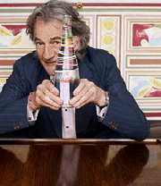
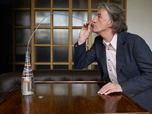
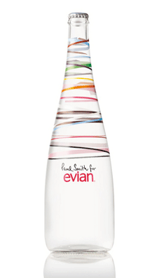
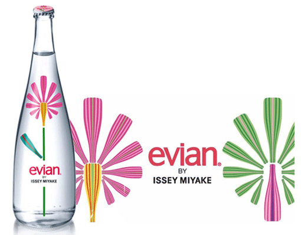
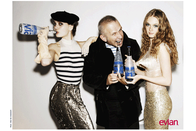
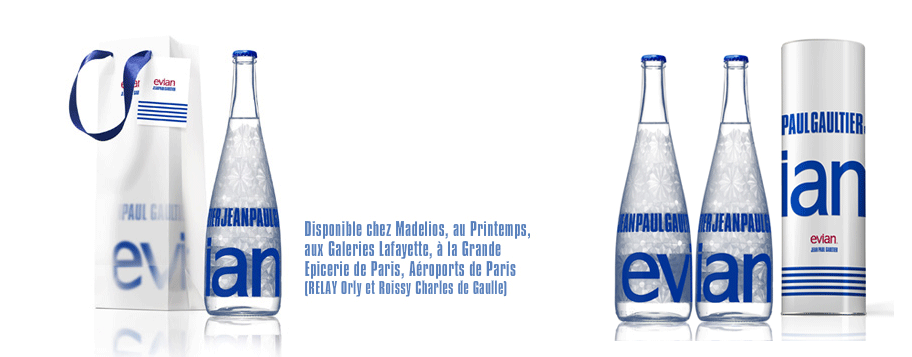
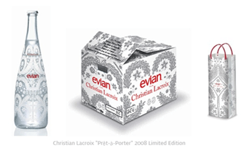
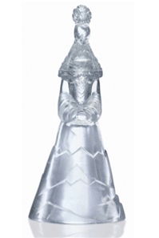
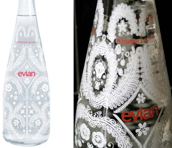
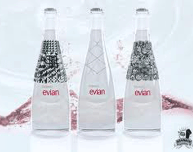

- 
Paul Smith for Evian
매년 아티스트 콜레보레이션을 발표하며 제품적 속성이 아닌 브랜드 속성의 폭을 넓히며 끊임없이 진화한다.
폴 스미스가 바라보는 세상은 어린아이가 바라보는 "칼라풀한" 세상이다. 그는 자신의 세계가 childlike이지 결코 childish하지 않다고 힘주어 말한다. 즉 어린아이처럼 호기심으로 가득한 흥미진진한 세계와 어리석음과 동일시되는 유치한 세계를 구별하는 것이다. 그래서 그의 세계는 늘 그렇게 재미와 에너지가 가득한 신나는 세계이며 어느 색 하나로는 도저히 표현할 수 없어서 일곱빛갈 무지개보다도 색동 저고리보다도 다양한 색채로 무한대로 표현되고 확장된다. 온갖 장난감과 재미있는 소품들로 가득한 그의 작업실은 곧 그의 놀이터이자 창조적인 아이디어들이 샘솟는 공장이기도 하다.
폴과의 만남은 에비앙의 슬로건을 지극히 단순화시켰다.
"젊게 살자!" 에비앙만 마시면 언제나 싱그러운 젊음을 유지하며 살 수 있을 것 같은 메시지에 그냥 심플하게 설득된다. 그런 싱그러운 디자인 덕분일까? 그의 물병을 보면 그의 인생철학이 떠오른다. 재미와 에너지가 가득한 천재 디자이너의 손길이 닿은 에비앙 병은 이미 물병이 아닌 수집가치 높은 예술품의 반열에 올라버렸다. 한정판으로 생산했기에 살래야 살 수도 없다. 병 뚜껑에 자기 이름의 약자 PS를 새겨넣은 에비앙 병은 폴의 에너지가 휙휙 돌아 넘친다.Paul Smith for Evian
이 모든 에너지와 끊임 없이 솟아나는 아이디어의 근원은 무엇일까?
무엇이 폴의 인생을 살맛 나는 에너지와 창조적인 아이디어로 넘치게 하는 것일까?
에비앙에 Energy와 Fun으로 가득 차 있다는 그의 표정에서는 'old'한 느낌을 찾을 수 없다.
형형색색 훌라후프를 돌리고 있는 듯한 경쾌한 에비앙의 Bottle.
폴스미스 특유의 패턴을 닮은 무늬,
에너지와 즐거움이 가득한 젊음을 표현한다. - 
evian by Issey Miyake
일본을 대표하는 패션 디자이너 Issey Miyake.
프랑스의 생수 유명 브랜드 에비앙이 자국 크리스티앙 라크르와, Jean Paul Gaultier의 뒤를 이어 가깝고도 먼나라 일본의 이세이미야케에게 병 디자인을 맡겼다.
맑고 영롱한 컬러와 심플한 디자인으로 명성을 날리고 있는 이세이미케 답게 에비앙의 디자인 역시 특유의 참신함을 응용했다. 동양적 아름다움에 현대적 이미지의 역동적이 꽃이 디자인 된 이 병은 자연스럽게 병과 어우러져 마치 어린시절 꿈꿔왔던 크리스마스 선물을 연상케 한다.
이세이미야케는 에비앙의 맑고 깨끗함과 순수함을 즐거움과 발랄함으로 표현했다고. - 
Jean Paul Gaultier
크리스탈 패턴과 블루컬러로 새겨진 모노그램
Jean Paul Gualtier와 패션 피플의 상징 evian이 손을 잡고 스페셜 보틀을 출시했다. 눈으로 즐기고 인테리어 소품으로도 멋지게 활용할 수 있는 하나의 패션 아이템이 된 스페셜 보틀. 장 폴 고띠에의 시그니쳐 디자인인 경쾌한 파란색 스트라이프가 들어간 프레타포르테 버전과, 세계적인 크리스털 명품 Baccarat로 만들어진 오트쿠튀르 버젼을 출시했다.프레타포르테 버전은 프랑스 슈퍼마켓 체인에서 2.99 유로에 판매되고 있으며, 오트쿠튀르 버전은 7개 한정 제품으로 경매를 통해 판매될 예정이다.
- 
Evian & Christian Lacroix.
the spacial evian dress.
오트쿠튀르의 거장인 Christian Lacroix은 에비앙 보틀을 오트쿠튀르와 프레타포르테(기성복라인)의 2가지로 나누었다. 오트쿠튀르 버전은 드레스를 입고 있는 멋진 여성모양의 병 모양을, 빛나는 장식 라이트 레이스 패턴은 클래식한 식물을 연상시킨다. 프레타포르테 버전은 천연 샘물의 순결을 상징하는 눈 꽃 모양의 눈 결정 패턴으로 깨끗하고 맑은 물의 이미지를 강조했다.
